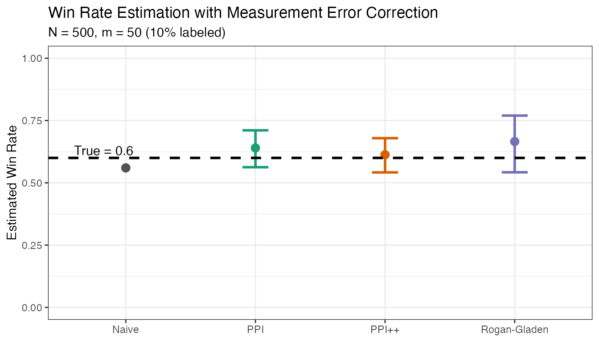

Getting Started with debiasLLMReporting
getting-started.RmdOverview
When using LLMs as judges to evaluate other models (e.g., comparing outputs in pairwise comparisons), the LLM judge introduces measurement error. This package provides methods to correct for this bias using a small calibration sample where both human labels and LLM predictions are available.
The key insight is that with a confusion matrix estimated from calibration data, we can “debias” the prevalence estimate from the full (unlabeled) test set.
Problem Setup
Consider the task of estimating the win rate of Model A versus Model B based on pairwise comparisons. The ground truth is determined by human evaluators, but human labeling is expensive. Instead, we use an LLM judge to evaluate a large number of comparisons.
The Challenge
Let \(Y \in \{0, 1\}\) denote the true human preference (1 = Model A wins) and \(\hat{Y} \in \{0, 1\}\) denote the LLM judge’s prediction. Our goal is to estimate:
\[\theta = P(Y = 1) = \text{true win rate of Model A}\]
The naive approach is to use \(\hat{\theta}_{\text{naive}} = \frac{1}{n}\sum_{i=1}^{n} \hat{Y}_i\), but this is biased when the LLM judge makes errors.
Misclassification Model
We model the LLM judge’s errors using two parameters:
- Sensitivity \(q_1 = P(\hat{Y} = 1 \mid Y = 1)\): probability the judge correctly identifies Model A wins
- Specificity \(q_0 = P(\hat{Y} = 0 \mid Y = 0)\): probability the judge correctly identifies Model B wins
When \(q_0, q_1 < 1\), the naive estimator is biased. For example, if the judge has a preference for Model A (high \(q_1\), low \(q_0\)), the naive estimate will overestimate Model A’s true win rate.
The Solution: Calibration + Correction
We assume access to:
- Calibration set (\(m\) samples): Both human labels \(Y\) and judge predictions \(\hat{Y}\) are observed
- Test set (\(n\) samples): Only judge predictions \(\hat{Y}\) are observed
From the calibration set, we estimate \(q_0\) and \(q_1\). Then we apply correction methods to obtain an unbiased estimate of \(\theta\) with valid confidence intervals.
Simulated Example
Let’s simulate a scenario where:
- We want to estimate the true win rate of Model A vs Model B
- An LLM judge provides predictions, but with imperfect accuracy
- We have a small calibration set with human labels
Generate Data
# Parameters
N <- 500 # Total samples
m <- 50 # Calibration set size (10% labeled)
theta_true <- 0.6 # True win rate for Model A
q0 <- 0.85 # Specificity: P(judge says B | human says B)
q1 <- 0.80 # Sensitivity: P(judge says A | human says A)
# Generate true labels
Y_all <- rbinom(N, 1, theta_true)
# Generate LLM judge predictions (with misclassification)
Yhat_all <- ifelse(
Y_all == 1,
rbinom(N, 1, q1), # True positives detected with prob q1
1 - rbinom(N, 1, q0) # True negatives detected with prob q0
)
# Split into calibration and test sets
idx_cal <- sample(N, m)
idx_test <- setdiff(seq_len(N), idx_cal)
Y_cal <- Y_all[idx_cal]
Yhat_cal <- Yhat_all[idx_cal]
Yhat_test <- Yhat_all[idx_test]Apply Estimators
# 1. Naive estimate (no correction)
naive_est <- mean(Yhat_test)
cat("Naive estimate:", round(naive_est, 3), "\n")
#> Naive estimate: 0.56
# 2. PPI (Prediction-Powered Inference)
ppi_result <- ppi_point_and_ci(
Y_L = Y_cal,
f_L = Yhat_cal,
f_U = Yhat_test,
alpha = 0.10
)
# 3. PPI++ (with optimized lambda)
ppi_pp_result <- ppi_pp_point_and_ci_general(
Y_L = Y_cal,
f_L = Yhat_cal,
f_U = Yhat_test,
alpha = 0.10
)
# 4. Rogan-Gladen (classical measurement error correction)
m0 <- sum(Y_cal == 0)
m1 <- sum(Y_cal == 1)
q0_hat <- mean(Yhat_cal[Y_cal == 0] == 0)
q1_hat <- mean(Yhat_cal[Y_cal == 1] == 1)
p_hat <- mean(Yhat_test)
rg_result <- llm_point_and_ci(
p_hat = p_hat,
q0_hat = q0_hat,
q1_hat = q1_hat,
n = length(Yhat_test),
m0 = m0,
m1 = m1,
alpha = 0.10
)Compare Results
results <- data.frame(
Method = c("True", "Naive", "PPI", "PPI++", "Rogan-Gladen"),
Estimate = c(
theta_true,
naive_est,
ppi_result$theta,
ppi_pp_result$theta,
rg_result$theta
),
CI_Lower = c(NA, NA, ppi_result$ci_lower, ppi_pp_result$ci_lower, rg_result$ci_lower),
CI_Upper = c(NA, NA, ppi_result$ci_upper, ppi_pp_result$ci_upper, rg_result$ci_upper)
)
results$Bias <- results$Estimate - theta_true
results$CI_Width <- results$CI_Upper - results$CI_Lower
results$Covers_True <- results$CI_Lower <= theta_true & results$CI_Upper >= theta_true
knitr::kable(results, digits = 3)| Method | Estimate | CI_Lower | CI_Upper | Bias | CI_Width | Covers_True |
|---|---|---|---|---|---|---|
| True | 0.600 | NA | NA | 0.000 | NA | NA |
| Naive | 0.560 | NA | NA | -0.040 | NA | NA |
| PPI | 0.640 | 0.563 | 0.711 | 0.040 | 0.148 | TRUE |
| PPI++ | 0.613 | 0.542 | 0.679 | 0.013 | 0.137 | TRUE |
| Rogan-Gladen | 0.666 | 0.542 | 0.770 | 0.066 | 0.228 | TRUE |
Visualize
library(ggplot2)
#> Warning: package 'ggplot2' was built under R version 4.4.3
plot_df <- results[results$Method != "True", ]
plot_df$Method <- factor(plot_df$Method,
levels = c("Naive", "PPI", "PPI++", "Rogan-Gladen"))
ggplot(plot_df, aes(x = Method, y = Estimate, color = Method)) +
geom_point(size = 3) +
geom_errorbar(aes(ymin = CI_Lower, ymax = CI_Upper), width = 0.2, linewidth = 1,
na.rm = TRUE) +
geom_hline(yintercept = theta_true, linetype = "dashed", linewidth = 1) +
annotate("text", x = 0.6, y = theta_true + 0.03,
label = paste("True =", theta_true), hjust = 0) +
scale_color_manual(values = c(
"Naive" = "#525252",
"PPI" = "#1B9E77",
"PPI++" = "#D95F02",
"Rogan-Gladen" = "#7570B3"
)) +
labs(
title = "Win Rate Estimation with Measurement Error Correction",
subtitle = paste0("N = ", N, ", m = ", m, " (", round(100*m/N), "% labeled)"),
y = "Estimated Win Rate",
x = NULL
) +
theme_bw() +
theme(legend.position = "none") +
coord_cartesian(ylim = c(0, 1))
Key Takeaways
- Naive estimates are biased when the LLM judge has imperfect accuracy
- PPI uses the calibration residuals to correct the bias
- PPI++ adaptively weights the correction to minimize variance
- Rogan-Gladen uses the classical epidemiological approach based on sensitivity/specificity
All corrected methods aim to provide valid confidence intervals with nominal coverage, while the naive estimate’s CI will not cover the true value when there’s systematic bias.
Next Steps
See the Real Data Example vignette for applying these methods to actual LLM judge evaluations.